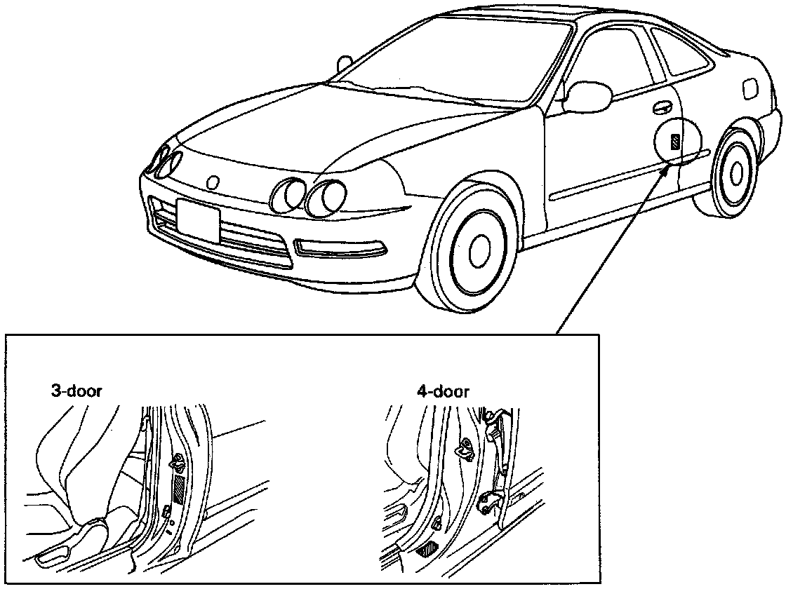

Operation CHARM
: Car repair manuals for everyone.
Home
>>
Acura
>>
1995
>>
Integra (RS, LS) L4-1834cc 1.8L DOHC PFI
>>
Repair and Diagnosis
>>
Application and ID
>>
Where to Find VIN and Safety Standard Certification Labels
>>
Canada
Canada
Vehicle Identification Number and Canadian Motor Vehicle Safety Standard Certification Location:
